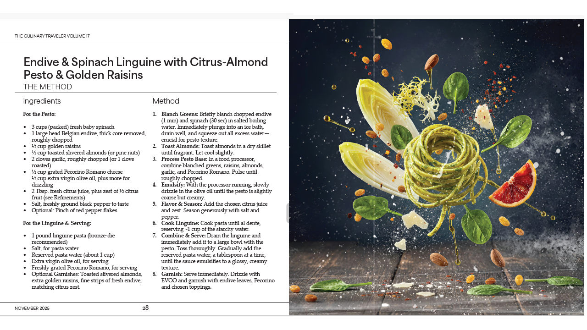

The Record
not a biography.
31 published titles precede the present program.
The publishing record extends across more than three decades of editorial and print production: catalog design, article research and writing, magazine print advertising, publication layout, advertising copy, design and photography, audio production, marketing materials, video documentary production, and independently developed books. The work has moved across subjects, disciplines, and markets under a number of distinct pseudonymous editorial identities, while the underlying practice has remained consistent: research the material, shape it editorially, and produce it as a finished publication.
The catalog now consists of 31 published titles, including 10 titles that reached Top 10 positions in their respective Ingram categories. What began as individual books gradually became a more deliberate practice of series, monographs, field records, and research-driven publications.
The 31 published titles represent the work of three authors working across multiple pseudonymous publishing identities. The pseudonyms distinguish editorial voices and areas of authorship; they do not represent separate authors.

The publication can be read whole.
The record is not limited to individual books. P1Lab has also produced complete magazine-form editorial work: researched, written, designed, edited, and prepared as a finished publication.
The complete publication is available for direct examination rather than represented through excerpts or promotional samples.
View the complete publicationThe work crosses disciplines without becoming diffuse.
Research, editorial judgment, technical development, and production are treated as parts of the same publishing practice.
The subject changes. The underlying discipline does not: investigate the material, establish the record, understand the structure, and produce something durable enough to be examined independently.
Research
Primary-source investigation, archival work, field observation, technical literature, historical context, and comparative study.
Editorial
The organization of complex material into coherent publications with a defined scope, vocabulary, structure, and point of view.
Technical
Programming, image systems, digital production, prepress conditioning, media processing, and tools developed around the requirements of the work.
Production
Book architecture, publication design, image preparation, manufacturing specifications, digital distribution, and finished physical objects.
The publishing practice did not begin with publishing.
The technical record extends into programming and systems development dating to the 1990s, including work involving media, signal processing, image systems, technical documentation, and production tools.
That history matters because the publishing practice was never separated cleanly from the systems used to make it. Technical problems were often treated as production problems, and production problems as opportunities to build better systems.
The public GitHub archive represents an inspectable contemporary portion of that technical record. It is not presented as the entirety of the earlier work.
View the technical archiveFrom individual works to sustained records.
The current practice applies the same underlying discipline to subjects that require deeper documentation: specialized industries, material culture, technical systems, regional histories, and institutions.
The record remains open.
The published bibliography, technical archive, and current studies provide different views of the same practice. None is intended to function as a résumé.
They are working records: available for inspection by people who need to understand what P1Lab actually does.
A serious record should be available to serious readers.
P1Lab works with organizations, institutions, and specialized operators whose work warrants serious documentation, research, or publication.
Contact P1Lab